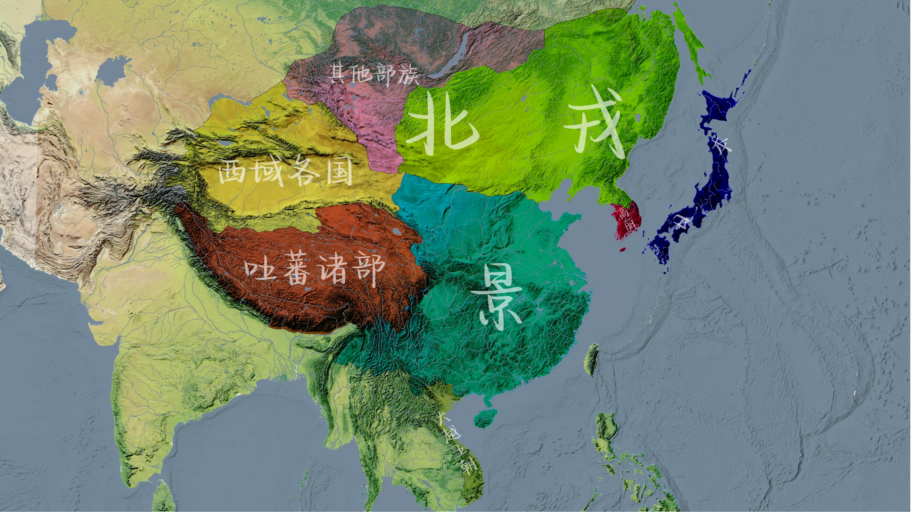
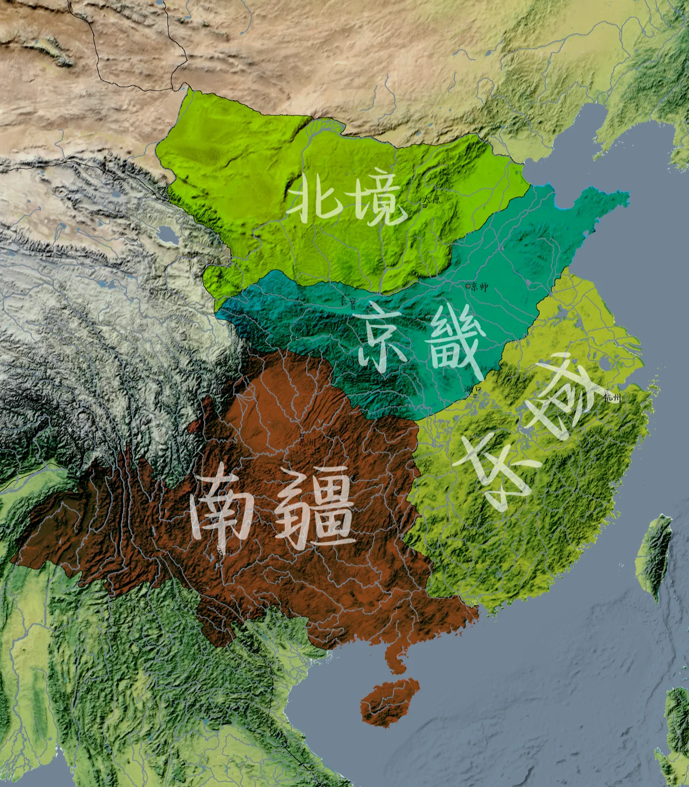

← 返回首页
卷 首 详 阅
大景王朝
太祖定鼎，国势盛而血脉断；今上铁腕，朝堂寂而商贸兴。
太祖起兵，率领亲信忠臣，灭亡两国，建立大景王朝。建国之初，天下饥荒，饿殍遍野，百姓难以生存，且天灾异象频发。太祖以身作则，厉行节俭，善于听取忠臣谏言。他恢复科举选拔人才，重新划分土地安置百姓，削弱地方兵权以巩固中央，振兴百工以繁荣经济。国力逐渐恢复，国势日渐强盛，但太祖因积劳成疾，不久驾崩。他唯一的儿子投井自尽，皇室血脉断绝。
——
后续走向：朝廷陷入混乱，党争不断。当今圣上登基后，朝中仍有不少反对之声。当今圣上手段强硬，凡有异议者，要么斩首示众，要么流放边疆。自此，朝堂再无反对之声。当今圣上励精图治，加强中央权力以压制豪强，杜绝权贵私相授受，发行纸币（交子）以促进民间经济。一时间，宫廷歌舞升平，民间商贸繁荣。
异 族
北戎
漠北苍狼之裔，噬景野心如毒蔓潜生。
漠北苍狼之裔，部族散居苦寒之地。昔为大景所破而分裂，终由枭主一统。其王身世诡谲，或云旧王遗脉。少时没为战俘，辗转贵酋帐中，强作婉娈承欢。年十九献奇策破敌，始脱桎梏。秣马十载，鸠杀旧主，诈称王室正统。遂并八荒，鹰扬朔漠。然温雅皮囊下，噬景野心如毒蔓潜生。
——
以平原和山地为主，降水分布不均，自东南向西北递减。冬季寒冷漫长盛行西北风，积雪深厚。夏季温暖短促，降水集中。春秋季短暂，昼夜温差大。
天 下 舆 图
山河入卷
总览天下疆域，细察州府区划。点击舆图可查看原图。

